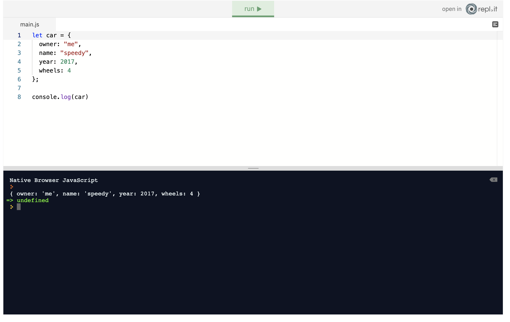
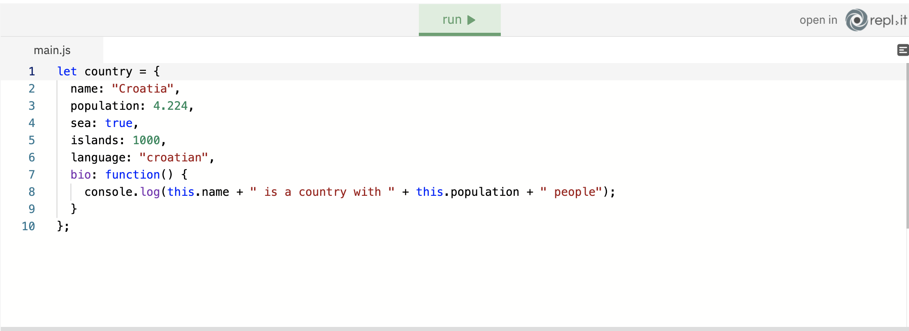
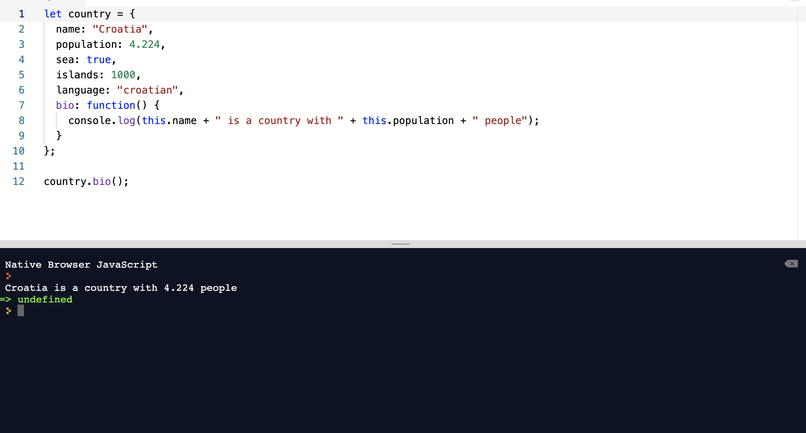

Are principles based on objects instead of the actions and data, it allows us to model the real world using objects.
objects are used to build javascript apps which model realit.
The first thing you need to know about the objects is that they are essential. If you want to build apps with JavaScript, you must know objects perfectly. You cannot be a JavaScript developer without using objects. So no pressure. Almost everything in JavaScript is an object whether you see it immediately or not. As we are going to show you, objects have data stored in key-value pairs. Objects are used to mimic things in the real world. You see something in the real world, and you want to code in JavaScript. Well, you better use objects! That fabulous car you are dreaming about can be written as a JavaScript object:
are a collection of related data, it can hold methods properties functions or even other objects
We can create objects by simply using a variable, name of the object and by assigning brackets {} to the variable.
Let’s take a look at an example. We are going to explain each line of code step by step.
On the first line, we created a variable named country and initialised it as an object with key-value pairs. The first key is name and its value is Croatia. The second key is population and it has value 4.224. Notice that each key-value pair is separated by a comma. The last key-value pair can have a trailing or hanging comma, but it’s not necessary. On the 7th line, we created a function named bio that shows a short bio of the object country. Don’t worry about the: this keyword yet. We will cover it later. The critical thing to notice is that JS objects can have functions themselves.
are a function that can be uses as an action for an object
they perform actions on the objects that they are defined in
uf we had for example an object named country and it was a method named bio we would use it like this
country.bio()
Let’s take a look. On the 7th line, we defined a bio function that shows the name of the country and its population. Then on the last line, we called the country.bio() method on the country object.
Notice that this function belongs only to the country object. It cannot be called like any other function. It has to be tied to an object. In the repl.it below we try and call it like bio() and the code throws an error.